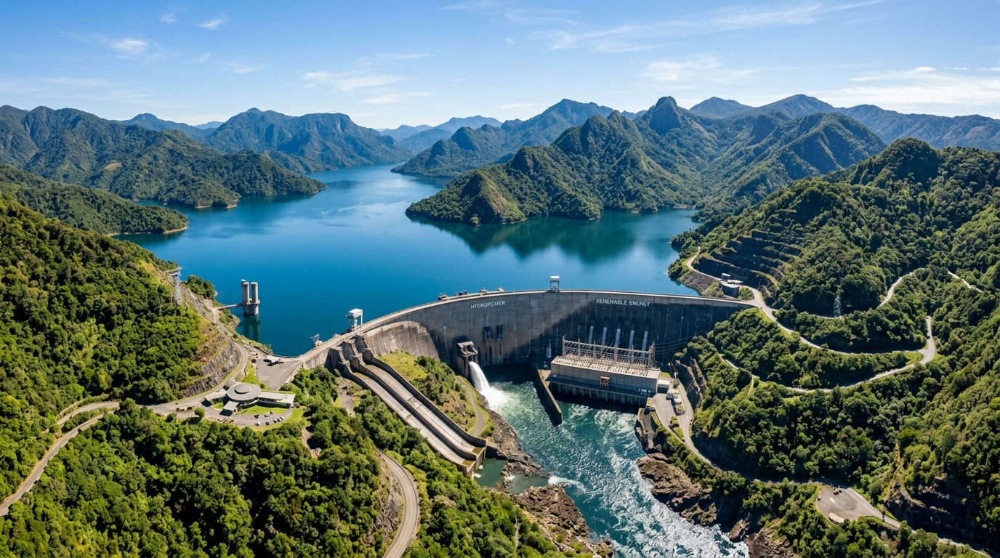

FEATURED ARTICLE

Integrated Water Management for a Climate Resilient Future
Learn how integrated planning, advanced technology and community participation can ensure long-term water security and environmental balance.